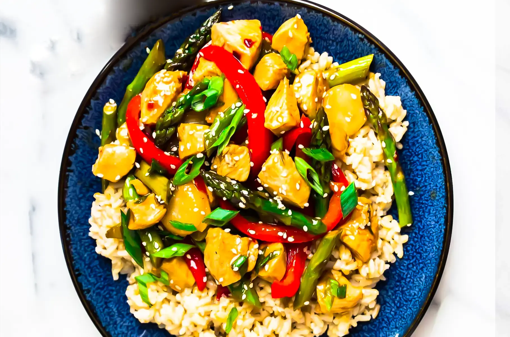
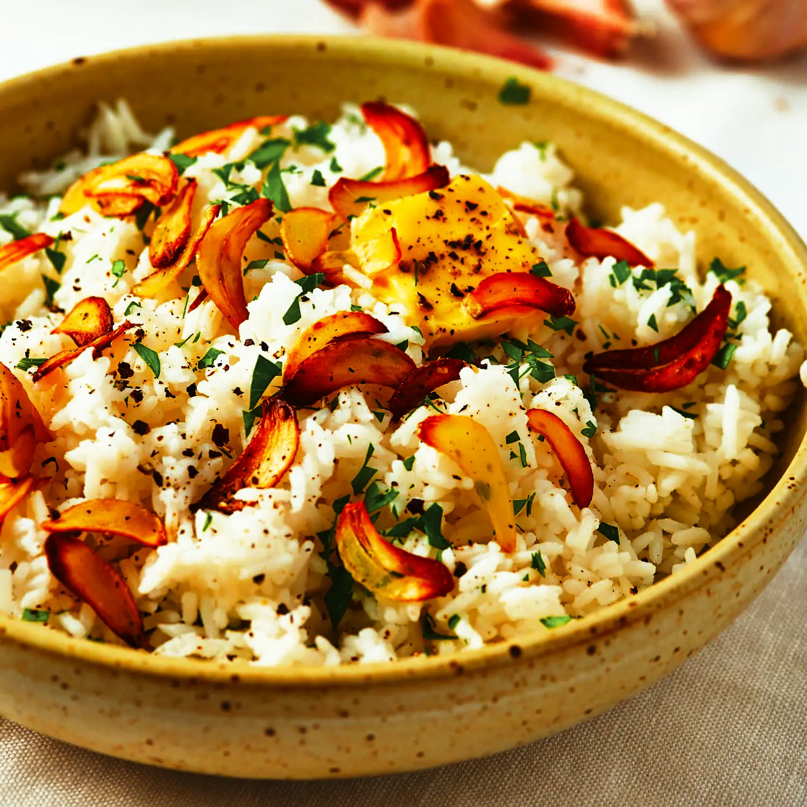
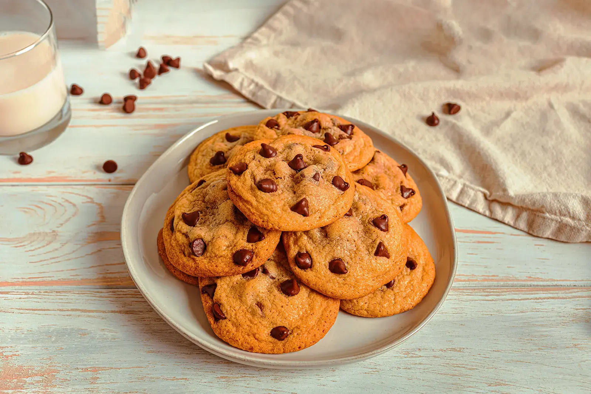

Glavna jela:

Prezueto sa: https://www.wellplated.com/teriyaki-chicken-stir-fry/
1. Pileće prženje:
- Zagrijte 1 žlicu ulja u woku ili velikoj tavi na jakoj vatri.
- Dodajte 1 pileća prsa narezana na kockice i uz miješanje pržite dok ne bude kuhano, oko 5 minuta.
- Dodajte 1 glavicu luka nasjeckanu na kockice, 1 crvenu papriku nasjeckanu na kockice, 1 žutu papriku nasjeckanu na kockice i 2 češnja nasjeckanog češnjaka.
- Pržite 2 minute uz miješanje, zatim dodajte 2 žlice soja umaka i 1 žlicu hoisin umaka.
- Poslužite preko kuhane riže.
2. Zamjene za ćufte:
- U velikoj zdjeli pomiješajte 1 lb mljevene junetine, 1/4 šalice krušnih mrvica, 1/4 šalice ribanog parmezana, 1 jaje i 1 žličicu sušenog bosiljka.
- Oblikujte 16 mesnih okruglica i pecite u pećnici zagrijanoj na 375°F 20 minuta.
- Prepecite 8 podrolata i svaku premažite marinara umakom.
- Na svaki kolut stavite po 2 mesne okruglice i pospite naribanim sirom mozzarella.
- Vratite u pećnicu i pecite dok se sir ne otopi, oko 5 minuta.
Prilog:

Prezeto sa: https://www.thekitchn.com/buttery-garlic-rice-258360
1. Pečeno povrće:
- Pomiješajte 1 tikvicu narezanu na kockice, 1 žutu tikvicu narezanu na kockice, 1 crveni luk narezan na kockice i 1 crvenu papriku narezanu na kockice s 2 žlice maslinovog ulja i 1 žličicom suhe majčine dušice.
- Pecite u pećnici zagrijanoj na 400°F 20 minuta ili dok ne omekša.
2. Riža s maslacem od češnjaka:
- U velikom loncu zagrijte 2 žlice maslaca na srednje jakoj vatri.
- Dodajte 2 češnja nasjeckanog češnjaka i miješajte 1 minutu.
- Dodajte 1 šalicu bijele riže i miješajte 1 minutu.
- Dodajte 2 šalice pileće juhe i zakuhajte.
- Smanjite vatru na najnižu, poklopite i kuhajte 18 minuta.
- Probosti vilicom i poslužiti.

Prezueto sa: https://www.verybestbaking.com/toll-house/recipes/original-nestle-toll-house-chocolate-chip-cookies/
Deserti:
1. Berry Crisp:
- U posudi za pečenje 9x9 inča pomiješajte 4 šalice miješanog bobičastog voća s 2 žlice šećera i 2 žlice kukuruznog škroba.
- U zasebnoj zdjeli pomiješajte 1 šalicu brašna, 1 šalicu zobi, 1 šalicu smeđeg šećera i 1/2 šalice hladnog maslaca.
- Pospite preko smjese bobičastog voća.
- Pecite u pećnici zagrijanoj na 375°F 35 minuta ili dok ne porumene.
2. Keksi sa čokoladnim komadima:
- U velikoj zdjeli umutite 1 šalicu maslaca i 1 šalicu bijelog šećera zajedno dok ne postane svijetlo i pjenasto.
- Umutite 1 jaje i 1 žličicu ekstrakta vanilije.
- Umiješajte 2 1/4 šalice brašna, 1 žličicu sode bikarbone i 1 žličicu soli.
- Umiješajte 2 šalice poluslatkih komadića čokolade.
- Spuštajte žličicama na lim za pečenje.
- Pecite u pećnici zagrijanoj na 375°F 10 minuta, ili dok ne porumene.